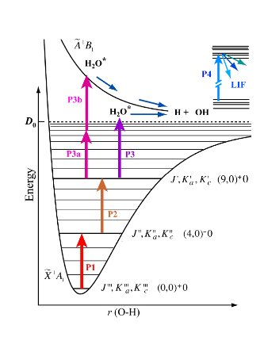

Main directions of activity Studies of the molecular spectra Theoretical group activity Studies of the molecular spectra Theoretical group activity
Theoretical group activity
The team of theoreticians at the Microwave Spectroscopy Department of the Institute of Applied Physics, Russian Academy of Sciences (IAP) has a long and successful history in studying light molecules. The first theoretical works studying water spectrum were published in the early 80-s. Originally the analysis was done using effective Hamiltonians.
The leader of the theoretical group of the laboratory O.L. Polyansky in 1985 proposed Pade-Borel method of series summation [Ref. 7 (1985)] since then widely used for studying water and related molecules spectra. Since early 90-s the progress in computational hardware and «software» has led to variational calculations taking the bigger part in analyzing triatomic molecules spectra. In particular, the program suit DVR3D for variational calculations of vibration-rotation energy levels using the exact (in the Born-Oppenheimer approximation) kinetic energy operator for nuclear motion was developed in the group of Prof. J. Tennyson University College London [Ref. 9 (2004)]. This development gave start to very successful cooperation between IAP RAS and UCL. The UK theoreticians are experts in the variational calculations, with the Russian side being experts in analysis of complicated experimental spectra.
During the last 15 years tens of thousands transitions of water were analyzed and assigned in a broad frequency range from far IR to near UV, the most known being study of sun spot spectrum, published in «Science» [Ref. 14 (1997)] (see also «Press about Water on the Sun» and Press Release of University of Waterloo). The accuracy of variational calculations is mostly determined by the quality of used potential energy surface (PES). The team took part in th development of several semiemperical PESes for H2O and H2S which were the best at the time. In recent years ab initio PESes are starting to play the leading role in improving accuracy of calculations. It's also important to take into consideration corrections to Born-Oppenheimer surface. Members of the team actively worked in all these fields leading to the publication in «Science» describing the methodology of obtaining ab initio PES of water which gives energy levels up to 26000 cm-1 with standard deviation of 1 cm-1 [Ref. 4 (2003)].
See also Press Release of UCL about this subject.
Variational methods opened the way for global calculations of water spectra in the ground electronic state up to dissociation. This work is currently under way in collaboration with experimentalists from Laboratoire de chimie physique moléculaire (LCPM), École Polytechnique Fédérale de Lausanne, Switzerland. They can measure the energies of the levels up to dissociation limit using the technique of double and triple resonance. Water energy levels in the 27000 – 41000 cm-1 region unanalyzable by other methods were assigned by our group using variational calculations. The paper in the Journal of Chemical Physics entitled «State-selective spectroscopy of water up to its first dissociation limit» [Ref. 10 (2009)] was chosen as a research highlight featured on the journal website home page.
|  |
Figure 1. Schematic energy level diagram and excitation scheme employed in experiments. The states are labeled by the asymmetric top rotational quantum numbers (J, Ka, Kc) and by the three vibrational quantum numbers (m,n)+/-ν2 in local-mode notation, where m and n are the quantum numbers for stretching vibrations and ν2 is the bending quantum number [Ref. 10 (2009)]. |
The last breakthrough of the theoretical group is reflected in the recent paper
Ref. 1 (2012).
Modern quantum mechanics (including quantum electrodynamics) is a unique
theory. It provides an agreement between theory and experiment at the
level of 8-9 digit coincidence for small systems, like H2+. And that was
for the whole system of rovibrational levels up to dissociation.
This distinguished achievement was not adequately matched for the bigger
systems. If we add just one proton and one electron to H2+, we will obtain
the smallest possible polyatomic system. For this molecule the accuracy
of ab initio calculations was limited to about 10 cm-1 in the optical
region.
The relative inaccuracy of H3+ calculations was a barrier
on the way to understanding of larger and larger molecules, including
biological, living systems. What kind of accuracy we can expect from
the modern theory for big systems? 8-9 digits for small systems is
fantastic achievement, but where is the progress for larger systems?
In the paper of the coworkers of Microwave spectroscopy laboratory -
Oleg Polyansky, Nikolai Zobov and Irene Mizus from the Microwave spectroscopy department written
together with the colleagues from US, France, Hungary, England and Germany and published in
Physical Review Letters a major breakthrough in understanding larger systems
is made. The accuracy of 0.1 cm-1 is achieved for all known lines up to
the optical region. Many components of the solution of quantum mechanical
Schroedinger equation published in this paper are even of higher, 0.01
cm-1 level of accuracy, which brings us at last close to the accuracy achieved
for the small systems. The ways to 0.01 cm-1 level of agreement between
theory and experiment for larger systems is now unblocked and open.
This is a major achievement, a milestone in precise understanding of large
systems.
To conclude : members of IAP RAS theoretical team are experts in analysis of complicated experimental spectra, development of ab initio methods, PES optimization by fitting to observed vibration-rotation energy levels. Their expertise is confirmed by more than 100 publications on studying water and other light molecules spectra.
|